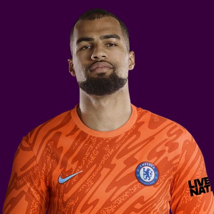

PITCHKEEP
Premier League ranks
Player File · GKP CHE · Premier #123

Robert Sánchez
GKP · Chelsea · age 28 · £5.0m
2025/26 Premier League
| Year | Starts | Min | G | A | xG | xA | CS | Saves | Bonus | YC | Sleeper | FPL |
|---|---|---|---|---|---|---|---|---|---|---|---|---|
| 2025/26 | 35 | 3040 | 0 | 1 | 0.0 | 0.04 | 9 | 98 | 7 | 3 | 176.8 | 113 |
Plus
- 176.8 Sleeper BPL 2025 points (Pitch #39).
- 98 saves at 2 points each. That is why keepers crack this list.
- 3040 minutes, 35 starts. Availability is a skill.
Minus
- Consensus 113.0 vs Sleeper #39 - the industry is cooler than last year's box score.
- Board spread 28–263 (FPL EP Next to FPL Price Board).
PitchKeep Take · The Premier
Robert Sánchez is a goalkeeper for Chelsea, age 28, £5.0m. The Premier ranks him 123rd overall by splitting Sleeper BPL 2025 (#39, 176.8 points) with the consensus of 3 other boards (113.0). Last year's Sleeper line ran 74 spots ahead of the expert/FPL mix. The third list keeps some of that production bump and refuses to throw the other boards out. That is the whole point of not just republishing The Pitch.
The 2025/26 line is 35 starts, 3040 minutes, 98 saves, 9 clean sheets and 49 goals against. Official FPL scored it at 113 points (3.2 per match) with 7 bonus. Sleeper's table turned the same counting stats into 176.8. Keepers get 8 a clean sheet, 2 a save, and −2 a goal against. That is a different sport than FPL's 10-from-saves cap, and it is why this board ranks them at all.
Underlying: 0.0 xG, 0.04 xA, 0.04 xGI. The job is shot-stopping volume in front of whatever Chelsea is this year. 98 saves is the Sleeper case. 9 clean sheets is the FPL case. If the back line leaks, both numbers move together and this ranking goes with them. The friendliest board is FPL EP Next at 28; the coldest is FPL Price Board at 263.
Market: £5.0m, 10 boards on the file. Price is the FPL tax, not the rank. The Premier is who produced and who the boards still believe. FPL's own EP-next is 2.6. ICT 86.7.
Instruction: he is on the 400, which is already a statement, and he is not a star. Stash in Sleeper if the minutes are real. Do not let a Pitch screenshot make you start him over a Premier top-80. Nearby on The Premier: Jaydee Canvot, James Hill, Trai Hume. Versus The Pitch (Sleeper-only #39), the hybrid moves him down to #123. That move is the third list doing its job.
He is 28, which on this board is neither a dart nor a warning label. Prime-age goalkeepers get ranked on what they just did and whether Chelsea still gives them the ball. 3040 minutes says yes. The 2026/27 FPL price (£5.0m) is the app's guess at whether that continues. The Premier is the blend of that guess and the box score.
You start one goalkeeper. That positional cap is why The Premier will not put a saves leader in the overall top ten unless the consensus also shows up. Sánchez's Sleeper line (176.8) already made The Pitch. The other boards (113.0) decide how far the hybrid lets him climb. Draft him as a keeper, not as an outfielder who happens to have gloves.
How to use the file: The Pitch is the Sleeper-only 400 (he is #39 there). The Premier is the 50/50 with every other board we track. Attack, Midfield, Defence, and Keepers re-rank the same Sleeper table by position. BK Value on this page follows The Premier when you are on the hybrid calculator and The Pitch when you are on the Sleeper calculator. Same curve either way - 12,000 at 1.01. Unranked sources are skipped, never treated as 999, which is why a player missing from Yahoo's XI is not secretly ranked 400th.
Sleeper vs FPL
Same 2025/26 line, two scoring tables
Board graph
Spread 28–263 · 10 sources
Tape · 2025/26 Premier League
BEST Of Robert Sanchez 2025/26 Match Highlights
Every Board
Spread 28–263 · 10 sources
| Source | Rank |
|---|---|
| FPL EP Next | 28 |
| Sleeper BPL 2025 | 39 |
| RotoWire FPL 400 | 69 |
| RotoWire Fantrax / Sleeper 400 | 96 |
| FPL 2025/26 Points | 97 |
| FPL Ownership | 117 |
| FPL Form | 146 |
| FPL ICT Index | 155 |
| RotoWire GW1 | 174 |
| FPL Price Board | 263 |
PK News
- Emi Martinez transfer news: Chelsea complete signing of Argentina international goalkeeper from Aston Villa
- Nicolas Jackson transfer news: Villa close to £65m move for Chelsea forward as Ollie Watkins nears exit
- Chelsea in talks with Emiliano Martínez’s camp and braced for Enzo Fernández bid
All players · The Premier · The Pitch · PK News · Calculator